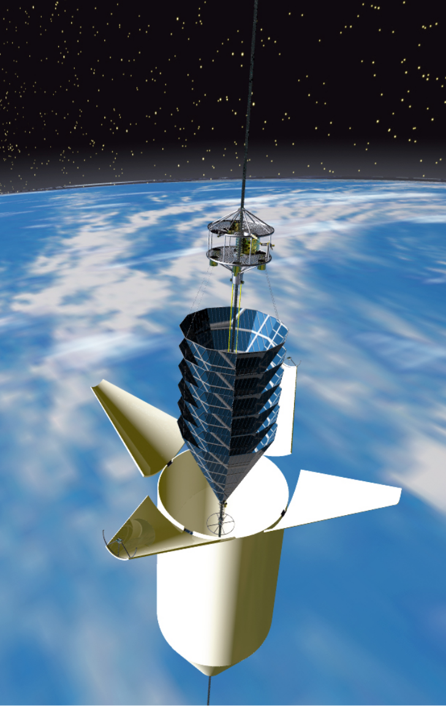

Space Elevator is Closer than we think
Space Elevator is Closer than we think
online slides version
0. Introduction
Humanity either spreads across the universe or perishes completely. No other choice
–Liu.CiXin(H.G.Wells)
1. Background
General Background to different methods entering space
1.1 Rocket
Starship
1.3 Space Airplane
Skylon
1.4 Mass Driver
Spin Launch
1.2 Space Elevator
Obayashi inc
ISEC
2. Space Elevator Design from NASA(2000)
-
Deploy a minimal cable
it can support 1238 kg weight
-
Increase this minimal cable to a useful capability
each climber completes its ascent the cable would be 1.5% stronger.
After 207climbers(2.3 years), the cable would supporting 20,000kg climber with a 13,000 kg payload.
(Additional cables of comparable capacity could be produced every 170 days using the first cable)
In 2.8 years the capacity of any individual(20,000kg) cable could be built up to (1000,000kg) orbiter. Payloads as large as the shuttle orbiter can be sent to the earth orbit.
-
Utilize the cable for accessing space
2.1 Cable
Carbon NanoTube
Tensile strength
| CNT | Steel | Kevlar | |
|---|---|---|---|
| tensile strength(GPa) | 130 | <5 | 3.6 |
| density() | 1300 | 7900 | 1440 |
| taper ratio | 1.5 |
2.1.1 different cross-section area in different altitude
2.1.2 micro-scale design
epoxy-CNT compound(60%CNT-40%epoxy)
another version of cable design
2.1.3 CNT Production
-
short CNT
-
no defects cable are allowed
-
production time for each cable must be no more than one year and 100 in parallel
2.2 Initial Cable Deployer
- 168,000kg spacecraft (19,800kg cable) should be sent to GEO(ISS~420,000kg, TSS~180,000kg)
- no extra power is required to deploy the cable.
- craft is to impart a small amount of angular moments to the cable as it is initially deployed
- transmit beacon signal, so the end of the cable can be found and retrieved on earth.
2.3 Climber
- total mass: 619kg(288kg cable)
- the cable deployed by first climber will be shorter and stronger(91,000km < 117,00km, 9.7kg > 8kg)
- first 207 climbers widen the edge of the initial ribbon to 30cm at 200km/h(reduce catastrophic and meteor damage). Once it reaches 30cm width, then thicken the ribbon.
- expandable design as it become larger each climb
- stuck: low altitude-> retrieve, high altitude->release
- if power-kilogram ratio > 40%(70kW for 113W/kg). strengthen cable to 20,000kg in 1.7 years, 1000,000kg in 3.7years. And also reduce cable damage(could reach 47.84 kw/kg in 2022, 3000kW 62.7kg)
2.3 Power
| Laser | Microwave | |
|---|---|---|
| operating wavelength | 0.84 | (94GHz) |
| transmitter system | free-electron laser + deformable mirro | phased array |
| transmitter area | 12m diametere | 1km diameter |
| receiver system | tunned solar cells | rectennas |
| overall efficiency | 2% | 0.05% |
2.4 Deployment
- MMH : monomethylhydrazine
- NTO : nitrogen tetroxide
- SC : space craft
2.5 Anchor
2.6 Destination
2.6 Challenges
-
Lightning
lightning-free zone
-
Meteors&Space Debirs&Low-Earch-Orbit objects
ribbon-design
-
Wind
wind-free zone and special design
-
Atomic Oxygen
probably the most tricky challenge
coat with as thin as 0.16 or and
-
Electromagnetic fields
the heating could be quickly radiate into the space
-
Radiation
more than 1000 years in the expected environment
-
Oscillation
characteristic period 7.1 hours.
climber no more than 10,000km/h
-
environment impact
2.6 Advantage
- 99% reduction in cost in entering space
- less space debris
- repair and removal spacecrafts
- large-scale commercial manufacturing in microgavity space
- large-orbit solar collectors for power generation
- …
3. Modern Space Elevator Design
3.1 Cable
Graphene
similar mechanics performance as CNT, but much easier to produce in large scale
LEED: Low Energy Electron Diffraction
3.2 Climber
3.3 Power
beyond atomsphere
4. Appendix
4.1 Terminology
-
LEO: Lowest Earth Orbit
where the period of 128min or less
-
GEO: Geostationary Equatorial Obit
only in equator and following the direction of Earth’s rotation.
4.2 Rocket
| Rocket | GTO(GEO) |
|---|---|
| Falcon Heavy | 26,700kg |
| Falcon 9 | 8,300kg |
4.3 Space Elevator Physics
4.3.1 space elevator height and tape ratio
Notation
- : earth radius
- : surface gravity
- : synchronous orbit radius
- : density of the cable
- : cross-sectional area
- : cross-sectional area at synchronous orbit radius
- : the end of the cable
- : uniform stress
- : characteristic height
The total gravity force should equal to the centrifugal force
assuming the stress in the cable distributed uniformly.
4.3.2 Deploy speed
Notation
- : gravitational torque
- : orbit radius
- : earth gravity constant ()
- : maximum deviation of Z axis from the vertical
- : angular velocity of the earth ()
- : length of deployed cable
- : angular momentum of the spacecraft ()
- : weight of the cable end